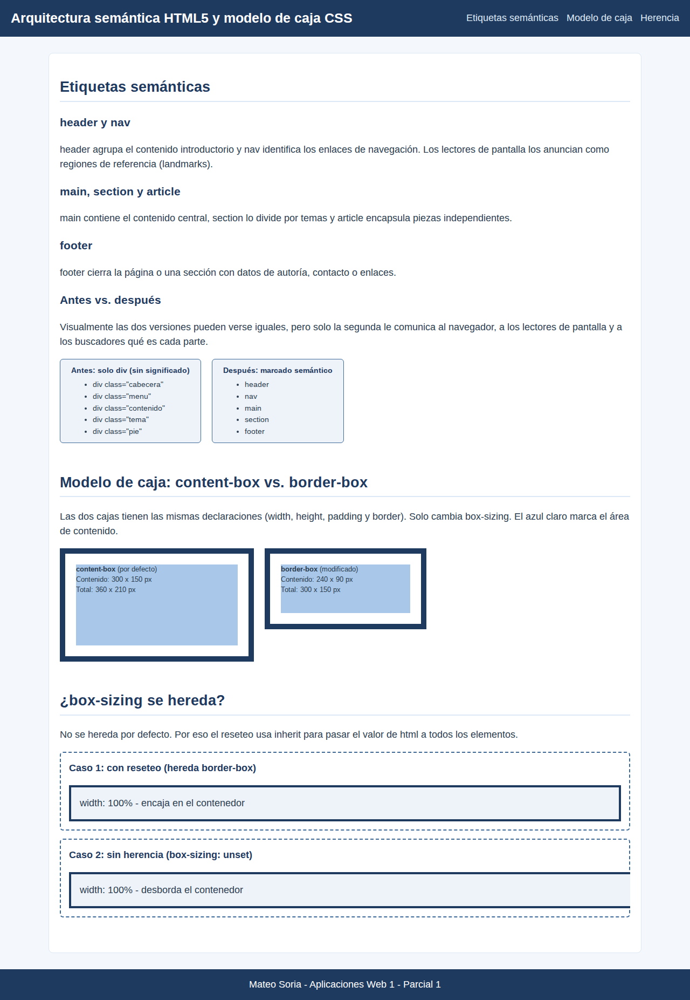

Alumno: Mateo Soria
Carrera: Analista de Sistemas - IES Siglo 21
Docente: Andrés Senn
Parcial n.º: 1
Tema elegido: 1) Arquitectura semántica HTML5 y modelo de caja CSS
El marcado semántico consiste en elegir cada etiqueta por el significado de su contenido y no por
su aspecto visual. HTML5 incorporó contenedores con un rol definido: <header> agrupa
el contenido introductorio, <nav> los enlaces de navegación, <main>
el contenido central (único por página), <section> un bloque temático con su propio
encabezado, <article> una pieza independiente y <footer> el cierre con
datos de autoría o contacto. A diferencia de <div>, que es un contenedor genérico sin
significado, estas etiquetas generan regiones de referencia (landmarks ARIA: banner, navigation,
main, contentinfo) que los lectores de pantalla anuncian y permiten recorrer con atajos, cumpliendo
el criterio WCAG 1.3.1 (Información y relaciones). Los motores de búsqueda también usan esta
jerarquía para identificar el contenido relevante, lo que favorece el SEO.
Según el modelo de caja, todo elemento se representa como una caja formada por contenido,
padding, border y margin. Con el valor por defecto, box-sizing: content-box,
width y height definen solo el área de contenido, por lo que el padding y el
borde se suman: una caja de 300 px de ancho con 20 px de padding y 10 px de borde ocupa 360 px.
Con border-box, el ancho declarado incluye padding y borde: la caja mide 300 px y el
contenido se reduce a 240 px. box-sizing no es una propiedad heredable, por eso el
reseteo global la declara en html y la propaga con
*, *::before, *::after { box-sizing: inherit; }, además de anular los márgenes por
defecto de html y body.
HTML aporta la estructura y el significado: cada contenedor semántico genera una caja de bloque
en el flujo normal. CSS decide cómo se dimensionan y distribuyen esas cajas. El reseteo con
border-box vuelve predecible el tamaño de cada región semántica, sin agregar <div>
envoltorios solo para corregir medidas, y así el marcado se mantiene limpio y accesible.
Archivos: src/index.html y src/recursos/estilos/estilos.css. Se ejecuta con
pnpm install y pnpm dev (five-server, raíz en src).
El body se divide en tres regiones independientes: header, main y
footer. La tipografía se carga de forma local con @font-face desde
recursos/estilos/fuentes (Liberation Sans, equivalente libre de Arial) y la paleta usa
tonos de azul y blanco.
La página está maquetada solo con header, nav, main,
section, article y footer, sin ningún
div. Cada section se vincula a su título con aria-labelledby y el
nav tiene aria-label. Dentro de la página se muestra el mismo esquema escrito
con div (antes) y con etiquetas semánticas (después).
Dos cajas con las mismas declaraciones: width: 300px; height: 150px; padding: 20px; border: 10px.
| box-sizing | Cálculo del ancho | Tamaño final renderizado | Área de contenido |
|---|---|---|---|
| content-box | 300 + 20×2 + 10×2 | 360 × 210 px | 300 × 150 px |
| border-box | 300 (incluye padding y borde) | 300 × 150 px | 240 × 90 px |
Los valores se verificaron en el navegador (DevTools > Computed): offsetWidth de 360 px
y 300 px respectivamente. Con background-clip: content-box el azul claro pinta solo el área de
contenido y se ve cuánto espacio queda en cada caso.
No. Para probarlo se usan dos hijos con width: 100%, 16 px de padding y 4 px de borde:
border-box gracias al reseteo con inherit y encaja exacto en su contenedor.box-sizing: unset, que equivale a inherit si la propiedad es heredable y a initial si no lo es. El valor computado es content-box aunque el padre tenga border-box, lo que demuestra que la propiedad no se hereda sola. El hijo desborda 40 px (16×2 + 4×2).html {
box-sizing: border-box;
}
*,
*::before,
*::after {
box-sizing: inherit;
}
html,
body {
margin: 0;
padding: 0;
}
